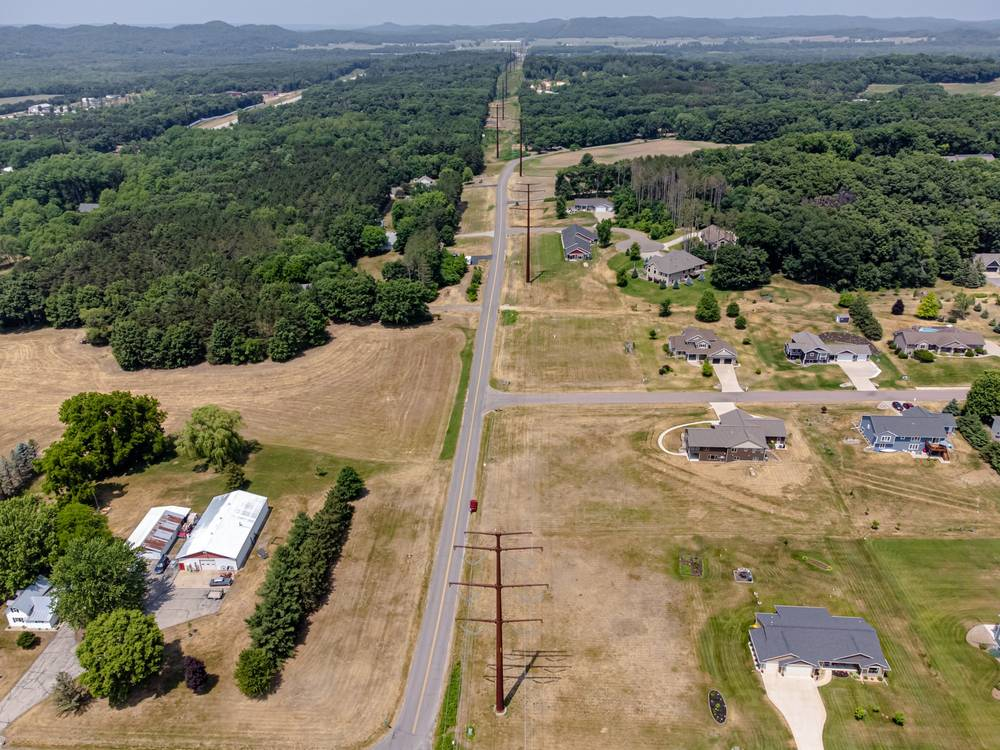

美 위스콘신 전기요금, 민간 전력회사 2020년 뒤 29% 올라…공영 14%·협동조합 15%의 두 배

연 8,000kWh 쓰는 가구 기준 민간 1,513달러·협동조합 1,313달러·시 공영 1,025달러
미국 위스콘신주에서 투자자 소유 민간 전력회사의 가정용 전기요금이 2020년 이후 시 공영 전력이나 협동조합보다 두 배가량 빠르게 오른 것으로 분석됐다. 2001~2025년 해마다 자료를 낸 65개 전력회사의 미국 에너지정보청(EIA) 통계를 보면, 2020년 이후 kWh당 요금은 민간 회사가 29% 오른 반면 협동조합은 15%, 시 공영 전력은 14% 오르는 데 그쳤다. 2025년 민간 회사 요금은 협동조합의 115%, 시 공영의 148% 수준이었다. 한 해 8,000kWh를 쓰는 가구라면 민간 회사에 1,513달러, 협동조합에 1,313달러, 시 공영 전력에 1,025달러를 내 공영 전력 가구가 약 488달러를 덜 낸 셈이다. 분석 대상 가정 고객 269만 곳 가운데 86.6%가 민간 회사 고객이며, 주 규제당국은 지난주 대형 민간 전력회사 두 곳의 요금 인상을 2년 더 승인했다.
시민에너지 관점
같은 주, 같은 물가 아래에서 주민이 소유한 공영·협동조합 전력이 민간 회사보다 요금을 절반 정도만 올렸다는 것은 소유 구조가 요금을 좌우한다는 뜻이다. 공공이나 주민이 운영하면 효율이 떨어진다는 걱정이 있지만, 위스콘신의 25년 자료는 오히려 주주 배당을 챙길 필요가 없는 쪽이 더 싸게 전기를 공급해 왔음을 보여 준다. 한국도 재생에너지 시대의 발전소를 대기업과 외국 자본에만 맡기지 말고 지자체 에너지공사와 주민 협동조합이 직접 소유하도록 길을 열어야 한다. 전기요금을 낮추는 가장 확실한 방법은 주민이 발전소의 주인이 되는 것이다.
출처: Urban Milwaukee 2026-11-11 John D. Johnson 원문 보기
米ウィスコンシン州の電気料金、民間電力会社は2020年以降29%上昇…公営14%・協同組合15%の2倍
年8,000kWh使う世帯で民間1,513ドル・協同組合1,313ドル・市営1,025ドル
米ウィスコンシン州で、投資家所有の民間電力会社の家庭用電気料金が2020年以降、市営電力や協同組合より約2倍の速さで上がったことが分析で分かった。2001～2025年に毎年データを提出した65社の米エネルギー情報局（EIA）統計によると、2020年以降のkWh当たり料金は民間会社が29%上がったのに対し、協同組合は15%、市営電力は14%の上昇にとどまった。2025年の民間会社の料金は協同組合の115%、市営の148%の水準だった。年間8,000kWhを使う世帯なら民間会社に1,513ドル、協同組合に1,313ドル、市営電力に1,025ドルを払うことになり、市営電力の世帯は約488ドル少なく済んだ計算だ。分析対象の家庭顧客269万件のうち86.6%が民間会社の顧客で、州の規制当局は先週、大手民間電力2社の料金引き上げをさらに2年分承認した。
市民エネルギーの視点
同じ州、同じ物価のもとで、住民が所有する公営・協同組合の電力が民間会社の半分ほどしか料金を上げなかったことは、所有構造が料金を左右することを示している。公共や住民が運営すると効率が落ちるという懸念があるが、ウィスコンシンの25年分のデータは、むしろ株主配当を気にする必要のない側が安く電気を供給してきたことを示す。韓国も再エネ時代の発電所を大企業や外国資本だけに任せず、自治体エネルギー公社や住民協同組合が直接所有できる道を開くべきだ。電気料金を下げる最も確かな方法は、住民が発電所の主人になることだ。
出典: Urban Milwaukee 2026-11-11 John D. Johnson 原文を読む
美国威斯康星州电价：民营电力公司2020年后上涨29%，是公营14%、合作社15%的两倍
以年用电8,000kWh的家庭计算，民营1,513美元、合作社1,313美元、市营1,025美元
分析显示，美国威斯康星州投资者所有的民营电力公司的居民电价在2020年后的涨幅约为市营电力和合作社的两倍。根据2001至2025年每年提交数据的65家电力企业的美国能源信息署（EIA）统计，2020年以来每千瓦时电价民营公司上涨29%，合作社上涨15%，市营电力仅上涨14%。2025年民营公司电价相当于合作社的115%、市营的148%。一个年用电8,000kWh的家庭向民营公司需支付1,513美元，向合作社支付1,313美元，向市营电力支付1,025美元，市营用户约少付488美元。分析涵盖的269万居民用户中86.6%是民营公司用户，而州监管机构上周又批准两家大型民营电力公司再涨价两年。
市民能源视角
在同一个州、同样的物价条件下，居民拥有的公营和合作社电力涨价幅度只有民营公司的一半左右，说明所有权结构决定电价。有人担心公共或居民运营效率低，但威斯康星25年的数据恰恰表明，不必顾及股东分红的一方一直以更低价格供电。韩国也不应把可再生能源时代的电站只交给大企业和外国资本，而应为地方能源公社和居民合作社直接持有电站开辟道路。降低电费最可靠的办法，就是让居民成为电站的主人。
来源: Urban Milwaukee 2026-11-11 John D. Johnson 查看原文
Wisconsin power bills: investor-owned utilities up 29% since 2020, twice the rise at municipal (14%) and co-op (15%) utilities
For a home using 8,000kWh a year: $1,513 with investor-owned, $1,313 with co-ops, $1,025 with municipal utilities
Residential electricity rates at Wisconsin's investor-owned utilities have risen about twice as fast since 2020 as those charged by municipal utilities and rural cooperatives, an analysis shows. Based on U.S. Energy Information Administration data for 65 utilities that reported every year from 2001 to 2025, the cost per kWh rose 29% at investor-owned companies since 2020, compared with 15% at cooperatives and 14% at municipal utilities. In 2025, investor-owned rates were 115% of cooperative rates and 148% of municipal rates. A household using 8,000kWh a year would pay $1,513 to an investor-owned utility, $1,313 to a cooperative and $1,025 to a municipal utility, saving about $488 with a city-owned provider. Investor-owned companies serve 86.6% of the 2.69 million residential customers in the analysis, and the state regulator last week approved two more years of rate increases for two of the largest.
Citizen Energy View
Within the same state and the same inflation, publicly and member-owned utilities raised rates only about half as much as for-profit companies, showing that ownership shapes bills. Some worry that public or community operation is inefficient, yet 25 years of Wisconsin data show the providers with no shareholders to pay have delivered cheaper power. Korea should not leave the power plants of the renewable era only to conglomerates and foreign capital, but open the way for local energy corporations and resident cooperatives to own them directly. The surest way to lower power bills is for residents to own the plants.
Source: Urban Milwaukee 2026-11-11 John D. Johnson Read the original